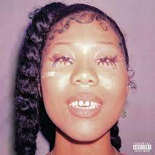

Scenery
I don't know about you but for me, I love views. I'd like to travel the world, you know? Go places outside of my house that I've never been before just for the moment. My favorite tree is the famous Japanese Cherry Blossom Tree.


Games
All IT stuff aside, in my free time I love to play video games. Here are some that I play and I think I'm decent at:


i was" height="230">


Them (Hate It!)" height="230">

Yeah, this is the type of music I listen to on a day-to-day basis. In my opinion, I think that everybody needs music in their lives. I feel like music brings out a person their true real self and show their personality more making them most reachable and open to relationships.